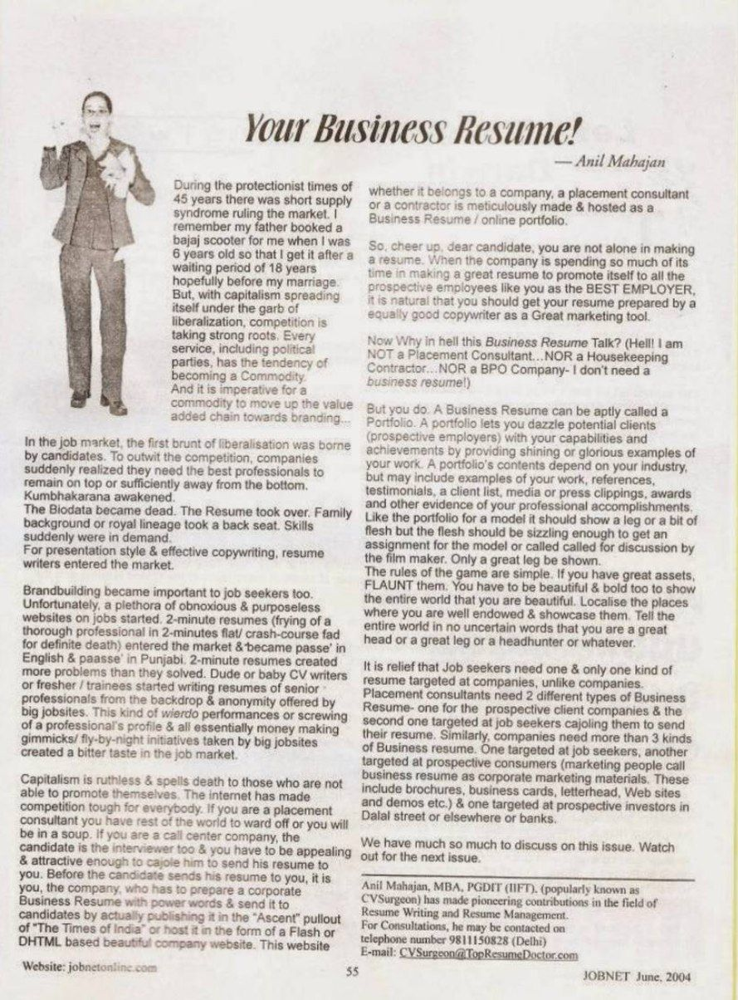

JOBNET Career Intelligence Archive
Stop writing a job resume. Start writing a Business Resume — a document that demonstrates how you have contributed to business success, solved organisational challenges and created measurable value.
Overview
In this forward-thinking article, Anil Mahajane challenged professionals to rethink one of the most important documents in their careers — the resume.
Rather than treating it as a record of employment, he encouraged readers to develop a Business Resume — a document that demonstrates how they have contributed to business success, solved organisational challenges and created measurable value.
This was a significant shift in thinking in 2004. Today, it has become the expectation rather than the exception. Employers no longer hire professionals simply because they possess qualifications or experience. They hire individuals who can demonstrate business impact, leadership capability and measurable results.
Original Publication
Original published article — scanned archival page.

Your Business Resume! · JOBNET · May 2004
Article Transcript
Published in JOBNET
During the protectionist times of 45 years there was a short supply syndrome ruling the market. I remember my father booked a Bajaj scooter for me when I was 6 years old so that I would get it after a waiting period of 18 years — hopefully before my marriage. But with capitalism spreading itself under the garb of liberalisation, competition is taking strong roots. Every service, including political parties, has the tendency of becoming a commodity.
And it is imperative for a commodity to move up the value-added chain towards branding.
In the job market, the first brunt of liberalisation was borne by candidates. To outwit the competition, companies suddenly realised they need the best professionals to remain on top or sufficiently away from the bottom. Kumbhakarana awakened.
The Biodata became dead. The Resume took over. Family background or royal lineage took a back seat. Skills suddenly were in demand. For presentation style and effective copywriting, resume writers entered the market.
Brand-building became important to job seekers too. Unfortunately, a plethora of obnoxious and purposeless websites on jobs started. Two-minute resumes entered the market and became passé. They created more problems than they solved. Dude or baby CV writers — freshers and trainees — started writing resumes of senior professionals from the backdrop and anonymity offered by big job sites. These money-making gimmicks and fly-by-night initiatives created a bitter taste in the job market.
Capitalism is ruthless and spells death to those who are not able to promote themselves. The internet has made competition tough for everybody. If you are a placement consultant you have the rest of the world to ward off. If you are a call centre company, the candidate is the interviewer too and you have to be appealing and attractive enough to cajole them to send their resume to you. Before the candidate sends their resume to you, it is you — the company — who has to prepare a corporate Business Resume with power words and publish it in leading newspapers or host it as a beautiful company website. This website, whether it belongs to a company, a placement consultant or a contractor, is meticulously made and hosted as a Business Resume and online portfolio.
So cheer up, dear candidate — you are not alone in making a resume. When the company is spending so much of its time making a great resume to promote itself as the Best Employer, it is natural that you should get your resume prepared by an equally good copywriter as a great marketing tool.
"Hell! I am NOT a Placement Consultant… NOR a Housekeeping Contractor… NOR a BPO Company — I don't need a business resume!"
But you do.
A Business Resume can be aptly called a Portfolio. A portfolio lets you dazzle potential clients — prospective employers — with your capabilities and achievements by providing shining examples of your work.
A portfolio's contents depend on your industry, but may include examples of your work, references, testimonials, a client list, media or press clippings, awards and other evidence of your professional accomplishments.
Like the portfolio for a model, it should show your best work — sizzling enough to get you called for discussion by the decision-maker. Only a great leg should be shown.
Modern Context
The recruitment landscape has transformed dramatically since this article was first published. Today's organisations recruit professionals who understand business — not merely their functional responsibilities.
Whether someone works in engineering, finance, manufacturing, healthcare, defence, technology or human resources, employers increasingly expect candidates to demonstrate how their work contributed to organisational success.
A modern Business Resume answers questions such as:
Recruiters and executive search consultants increasingly look for resumes that emphasise outcomes rather than duties, with clear evidence of leadership and business impact.
Then & Now
An effective Business Resume tells a story of value creation.
Key Takeaways
Practical Advice
A Business Resume should position you as someone who contributes to organisational success — not simply someone who performs assigned responsibilities.
Looking Ahead
Your resume should not simply describe your career — it should demonstrate the business value you have consistently created throughout your professional journey.
Artificial Intelligence will continue to transform recruitment, but organisations will always seek professionals who understand business. Technical expertise may secure an interview. Business thinking secures leadership opportunities.
About the Author
Anil Mahajan
MBA (IIFT) · Founder & Director, C-Suite Talent Management Consulting
30+ years of executive search and leadership advisory across India and the Middle East — spanning GCCs, Defence & Aerospace, Healthcare, Consumer Electronics, Steel, Cement and Infrastructure.